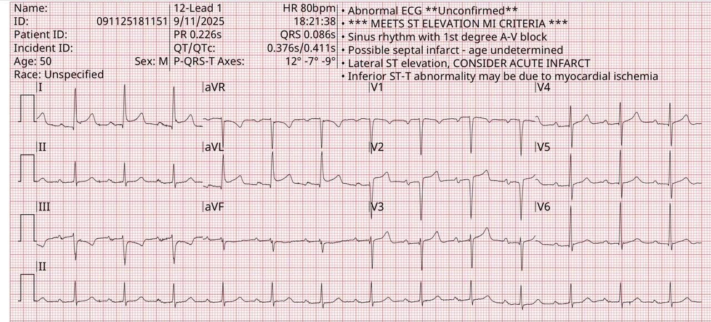
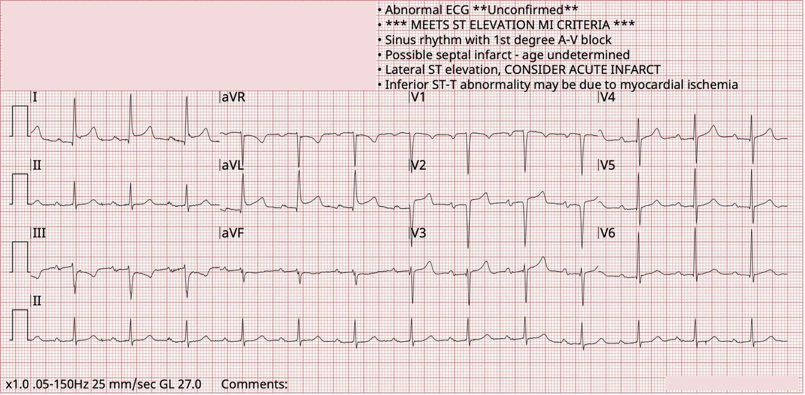
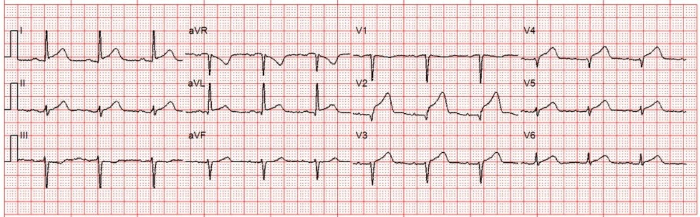
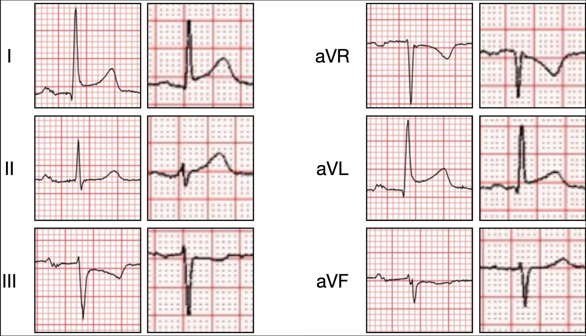
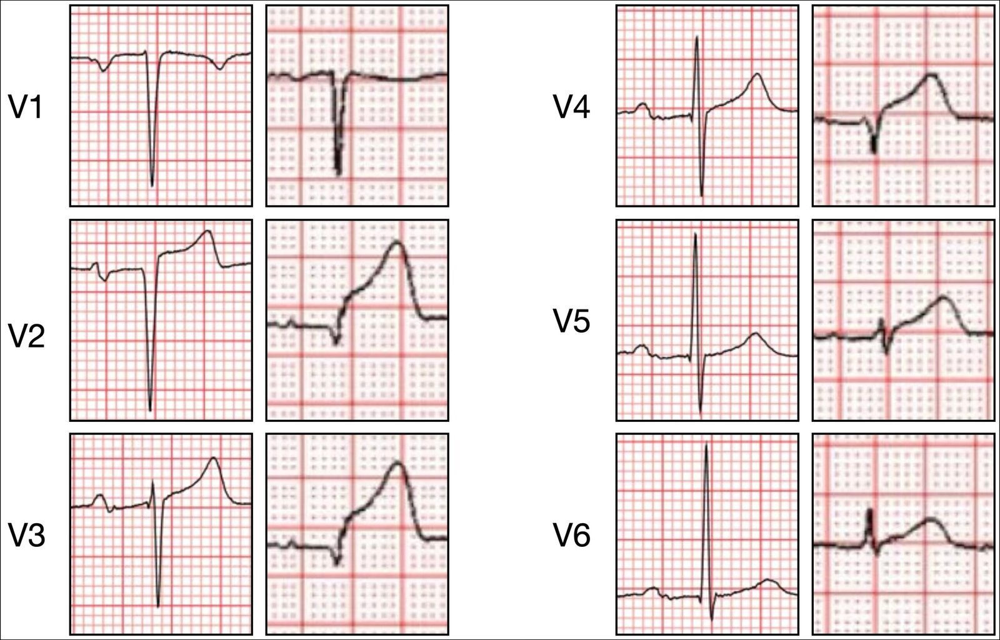
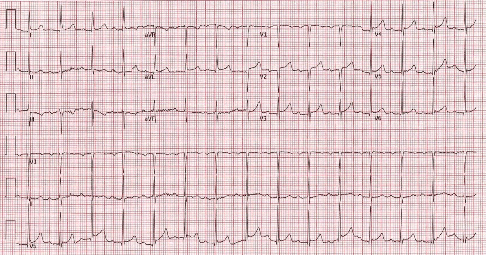
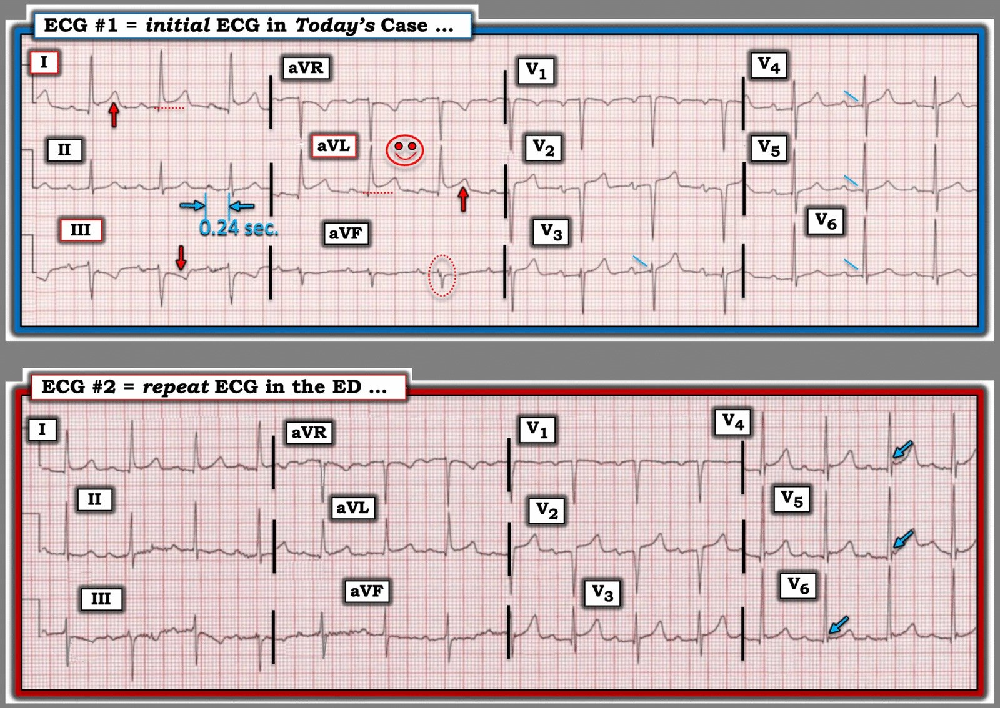

18/09/2025 — Được phát hiện bất tỉnh, hồi sinh tim phổi, có mạch trở lại. Đây là điện tâm đồ tại khoa cấp cứu. Đó là gì?
Bản dịch tiếng Việt của bài "Found down, CPR, pulse regained. Here is the ED ECG. What is it?" – Dr. Smith’s ECG Blog. Giữ nguyên toàn bộ 6 hình ảnh của bản gốc.


Một người đàn ông ở độ tuổi 60 được phát hiện bất tỉnh trong công viên. Người xung quanh đã bắt đầu hồi sinh tim phổi (CPR), nhưng khi đội cấp cứu ngoài viện (EMS) đến thì ông đã có mạch và không rõ thực sự ông có ngừng tim hay không. Ông được dùng naloxone và được ghi nhận là “có cải thiện phần nào”. Trong túi ông có những viên thuốc không rõ loại. Điện tâm đồ của ông được trình bày dưới đây.
Điện tâm đồ 1


Bạn nghĩ sao?
Tôi đã gửi bản ghi này cho nhóm EKG Nerdz. Dr. Smith và Dr. Hellerman lập tức trả lời rằng họ nghĩ đây là bản ghi “giả“. (Nghĩa là họ cho rằng đây không phải OMI, mà là một điện tâm đồ giả OMI và có thể đánh lừa người không chuyên.)
Tôi gửi nó cho một nhóm bạn khác tên là “OMI Royals” (những thần dân trung thành của mô hình AI PMCardio Queen of Hearts).
Arron Pearce nói rằng nó trông không giống thiếu máu cục bộ — “Các sóng T ở thành trước có đường cong đẹp đi lên tới một đỉnh nhọn.” Nanashī thừa nhận rằng dù anh nhận ra đây là hình ảnh giả, sẽ khó giải thích lý do cho một người mới tập đọc OMI. Dr. Floyd nhận xét rằng “hình thái sóng T đơn giản là trông không đáng lo.” Dr. Ghali gạt đi một cách đơn giản — “Với tôi thì trông giả.”
Xem thêm bài này: Quiz post: do either or both of these patients have high lateral OMI / South African flag sign? (Bài đố: một trong hai hay cả hai bệnh nhân này có OMI thành bên cao / dấu hiệu “Cờ Nam Phi” không?)
Tất cả những người đọc điện tâm đồ này có điểm gì chung? Trả lời: Họ đều là độc giả của blog, những người đã luyện tập có chủ đích, liên tục tự đố mình và đố nhau để mài giũa khả năng nhận dạng hình ảnh. Nhưng không ai trong chúng ta có thể học được nhiều hình ảnh nhanh và bền vững như Queen of Hearts.
Queen không thấy OMI. Kết quả của mô hình là 0.23. Cần điểm từ 0.50 trở lên mới được ghi nhận là dương tính. Dưới 0.30 là rất thấp và cực kỳ ít khả năng là OMI.
Ứng dụng PMcardio for Individuals 3.0 mới nay có mô hình Queen of Hearts mới nhất và khả năng giải thích của AI (bản đồ nhiệt màu xanh lam)! Tải ngay cho iOS hoặc Android. https://www.powerfulmedical.com/pmcardio-individuals/
Hãy so sánh với điện tâm đồ sau đây của một bệnh nhân khác, cho thấy OMI:
Điện tâm đồ 2


Dưới đây là các chuyển đạo chi đặt cạnh nhau. Trong mỗi cặp, bên trái là điện tâm đồ 1 (không phải OMI), bên phải là điện tâm đồ 2 (OMI). Hãy cố tập trung vào những khác biệt tinh tế:
Các chuyển đạo chi


Khi so sánh, ta thấy điện tâm đồ 1 có các đặc điểm sau:
- Sóng T rất mất đối xứng (sườn lên chậm, sườn xuống nhanh), và diện tích dưới đường cong nhỏ so với biên độ QRS
- Phần cuối QRS trát đậm, chuyển tiếp mượt vào đoạn ST
- Đoạn khởi đầu ST đi lên chậm và dạng lõm
- Điện thế có xu hướng cao hơn nhiều
Ngược lại, điện tâm đồ 2 cho thấy:
- Sóng T đối xứng hơn, với thể tích lớn hơn so với QRS
- Phần cuối QRS chuyển vào ST rất đột ngột, gần như tạo góc
- Đoạn ST ít lõm hơn, dẹt hơn
- Điện thế thấp hơn
Và các chuyển đạo trước tim:
Các chuyển đạo trước tim


Những thay đổi ta thấy ở đây tương tự như ở các chuyển đạo chi, nhưng khác biệt về sóng T rõ rệt hơn.
Quay lại ca bệnh:
Bệnh nhân được kích hoạt báo động STEMI và đưa đi chụp mạch vành cấp cứu, kết quả cho thấy bệnh động mạch vành mức độ nhẹ (có cả siêu âm trong lòng mạch (IVUS) động mạch LAD để tránh bỏ sót nứt vỡ mảng xơ vữa kèm tái thông tự phát — đáng khen vì sự kỹ lưỡng). Bốn lần đo troponin I độ nhạy cao liên tiếp trong vòng năm giờ đều trong giới hạn bình thường. Siêu âm tim cho thấy kích thước thất trái bình thường, phân suất tống máu thất trái bình thường, vận động thành bình thường, và tái cấu trúc đồng tâm (thay đổi cấu trúc hình học khi không có phì đại).
Khi tôi bàn về ca này với các đồng nghiệp tim mạch, họ cho rằng không có cách nào biện minh cho việc không kích hoạt phòng thông tim khi điện tâm đồ có ST chênh lên ấn tượng như vậy (STEMI dương tính!).
Tôi cho rằng hoàn toàn hợp lý khi xử trí bệnh nhân này mà không chụp mạch vành ngay, nhất là khi ngay từ đầu xác suất tiền nghiệm của OMI đã rất thấp. Thực tế, ghi chép của khoa cấp cứu ghi rõ rằng bệnh nhân “phủ nhận mọi cơn đau hay than phiền khi đến viện.” Xác suất tiền nghiệm OMI thấp cộng với một điện tâm đồ không có bằng chứng OMI.
Vậy điện tâm đồ cho thấy gì? ST chênh lên biến thể bình thường. Bản ghi lặp lại tại khoa cấp cứu được trình bày dưới đây:


Hình ảnh này vẫn còn, nhưng giờ tinh tế hơn. Một sự thật đáng tiếc và gây nản lòng là cả thay đổi động (dynamic) lẫn thay đổi soi gương (reciprocal) đều không đặc hiệu cho OMI, và cả hai đều có mặt ở đây!
Những điểm cần học:
- Ngay cả ST chênh lên kèm thay đổi soi gương cũng không nhất thiết đặc hiệu cho thiếu máu cục bộ
- ST chênh lên biến thể bình thường có thể khá ấn tượng và thỏa tiêu chuẩn STEMI
- Việc phân loại điện tâm đồ cấp cứu sẽ tiếp tục được cải thiện khi khả năng tiếp cận Queen of Hearts tăng lên
- ST chênh lên biến thể bình thường đôi khi có ST chênh xuống soi gương. Khi là ST chênh lên ở thành dưới, đôi khi có ST chênh xuống soi gương ở aVL. Vì vậy, bản thân sự hiện diện của ST chênh xuống soi gương không xác nhận OMI.
= =
======================================
BÌNH LUẬN CỦA TÔI, bởi KEN GRAUER, MD (19/9/2025):
Tôi rất thích những ca như hôm nay — khi một nhóm đồng nghiệp EKG Nerdz đáng kính của tôi đưa ra ý kiến khách quan về những điện tâm đồ khó. Tôi xem “Câu trả lời” về việc diễn giải điện tâm đồ ban đầu của ca hôm nay gồm 2 Phần: i) Điện tâm đồ ban đầu này có chỉ ra một OMI cấp cần kích hoạt phòng thông tim ngay hay không?; và, ii) Nên tiến hành lâm sàng thế nào là tốt nhất?
= = =
Suy nghĩ của tôi:
Tôi đồng ý với các đồng nghiệp EKG Nerdz — rằng điện tâm đồ ban đầu của ca hôm nay trông giống một biến thể tái cực hơn là một OMI cấp. Dù vậy — tôi không hoàn toàn chắc chắn về nhận định ban đầu này.
- Tôi sẽ không kích hoạt phòng thông tim dựa trên bệnh sử được cung cấp và điện tâm đồ ban đầu trong ca hôm nay.
- Dù vậy — tôi không chắc chắn 100% về nhận định này. Vì thế — tôi sẽ thu thập thêm thông tin, ghi thêm vài bản ghi theo dõi, và ít nhất 2 lần xét nghiệm troponin trước khi tôi yên tâm rằng một biến cố cấp đã được loại trừ hoàn toàn.
= = =
Điện tâm đồ ban đầu của ca hôm nay:
Để thuận tiện so sánh 2 điện tâm đồ được ghi trong ca hôm nay — tôi đặt chúng cạnh nhau trong Hình 1. Xin nhấn mạnh rằng, dù có một số dấu hiệu mô tả trên điện tâm đồ ban đầu hôm nay cần được ghi nhận — đối chiếu lâm sàng cho tôi ấn tượng rằng bản ghi ban đầu hôm nay có lẽ là một bản ghi “giả”. Để đầy đủ — tôi trình bày quá trình suy luận của mình như sau:
- Nhịp trong điện tâm đồ #1 là nhịp xoang khoảng ~80 lần/phút. Nhưng lưu ý có blốc AV độ 1 (tức là khoảng PR = 0.24 giây) — nên không hoàn toàn “bình thường”. Bản thân blốc AV độ 1 không nhất thiết là dấu hiệu đáng lo — nhưng sự hiện diện của nó ở đây nên khiến ta cảnh giác hơn.
- Dấu hiệu nổi bật nhất trên điện tâm đồ #1 là ST chênh lên ở các chuyển đạo bên cao I và aVL. Dù mức ST chênh lên hơi nhiều hơn mức thường thấy ở các biến thể tái cực — hình dạng của ST chênh lên là dạng lõm hướng lên (tức là dạng “mặt cười”), hay gặp hơn ở các biến thể tái cực.
- Có ST-T chênh xuống ở chuyển đạo III — có thể được diễn giải là thay đổi “soi gương” với ST chênh lên ở chuyển đạo aVL hướng ngược lại. Dù vậy — khi phức bộ QRS chủ yếu âm (như ở chuyển đạo III) — ST-T chênh xuống mà ta thấy ở chuyển đạo III không nhất thiết là thay đổi do thiếu máu cục bộ (vì trục sóng T ở các chuyển đạo chi bình thường đi khá sát theo trục QRS).
- Ở các chuyển đạo chi khác của điện tâm đồ #1 — có ST hơi dẹt ở chuyển đạo II — và ST-T dẹt ở chuyển đạo aVF — nhưng các dấu hiệu này không đặc hiệu.
- Cuối cùng — chuyển đạo aVF bị phân mảnh (tức là chỗ khía nằm trong hình bầu dục chấm ĐỎ ở chuyển đạo này). Dù phân mảnh có thể là dấu hiệu của “sẹo” — khi chỉ đơn độc ở chuyển đạo aVF, đây là dấu hiệu không đặc hiệu.
Ở các chuyển đạo trước tim của điện tâm đồ ban đầu:
- NẾU mối lo từ các chuyển đạo chi là ST chênh lên ở các chuyển đạo bên cao I và aVL — thì tôi sẽ mong thấy một dấu hiệu nào đó của tổn thương thành sau cấp. Điều này hoàn toàn vắng mặt. Thay vì ST dẹt (nếu không phải chênh xuống) ở các chuyển đạo V2,V3 như ta mong đợi khi có tổn thương thành sau — các chuyển đạo này lại có đoạn ST dốc lên, với ST chênh lên chút ít ở chuyển đạo V2.
- Phức bộ QS ở các chuyển đạo V1,V2 không có giá trị chẩn đoán.
- Các đường nghiêng màu XANH LAM ở các chuyển đạo V3 đến V6 làm nổi bật các sóng q rất nhỏ, thường không thấy lan xa tới tận chuyển đạo V3. Dù vậy — biên độ sóng R đủ lớn chiếm ưu thế bắt đầu từ chuyển đạo V4, nên các sóng q nhỏ này không có giá trị chẩn đoán.
- Điểm MẤU CHỐT: Các dấu hiệu điện tâm đồ nêu trên trong bản ghi ban đầu hôm nay được thấy ở một người đàn ông độ tuổi 60 được “phát hiện bất tỉnh” trong công viên mà không có xác nhận nào rằng đã xảy ra ngừng tim. Và, bệnh nhân này không có triệu chứng, không đau ngực khi đến khoa cấp cứu (ED). Thay vì ST chênh lên dạng lõm (concave-up) — nếu điện tâm đồ #1 thể hiện một OMI cấp, tôi sẽ mong thấy ST chênh lên ở các chuyển đạo bên này có hình dạng đáng lo hơn và/hoặc gợi ý có sóng T tái tưới máu ở người đàn ông đã “bất tỉnh” nhưng nay dường như không có triệu chứng!
- ĐIỀU CỐT LÕI: Với bệnh sử như vậy, bệnh nhân này sẽ được nhập viện. Nghĩa là ông có thể được theo dõi sát! Do đó — tôi không thấy cần vội vã đưa vào phòng thông tim khi bệnh nhân không có triệu chứng kèm bản ghi ban đầu không có giá trị chẩn đoán này. Tôi mong rằng troponin và các điện tâm đồ ghi lại sẽ làm rõ chẩn đoán kịp thời.
= = =
Hình 1: So sánh 2 điện tâm đồ của bệnh nhân hôm nay.


= = =
Còn điện tâm đồ ghi lại thì sao?
Đáng ngạc nhiên — điện tâm đồ ghi lại trong Hình 2 có cho thấy một số thay đổi so với điện tâm đồ ban đầu.
- Lại thấy nhịp xoang — với tần số hơi nhanh hơn so với điện tâm đồ #1.
- Mức ST chênh lên tương đối ở các chuyển đạo bên I và aVL ít hơn trên điện tâm đồ ghi lại so với bản ghi ban đầu. Tương tự — mức ST-T chênh xuống tương đối ở chuyển đạo III cũng ít hơn.
- ST-T dẹt không đặc hiệu ở các chuyển đạo II và aVF vẫn còn.
- Phân mảnh ở chuyển đạo aVF không còn nữa (Có lẽ đây là kết quả của thay đổi nhẹ về trục mặt phẳng trán).
- Ngoài vùng chuyển tiếp ở các chuyển đạo trước tim sớm hơn một chút — phức bộ QS ở các chuyển đạo V1,V2 kèm ST chênh lên nhẹ ở V2 và các sóng q rất nhỏ ở các chuyển đạo V3 đến V6 vẫn còn.
- Điều mới — là ST chênh lên dốc lên kèm khía điểm J (các mũi tên XANH LAM) ở các chuyển đạo V4,V5,V6.
- ĐIỀU CỐT LÕI: Người ta có thể bị cám dỗ diễn giải các thay đổi ST-T nêu trên giữa điện tâm đồ #1 và điện tâm đồ #2 là thay đổi “động”. Thay vào đó — tôi nghĩ hình ảnh tổng thể trên điện tâm đồ ghi lại ở các chuyển đạo I,aVL; III; và ở các chuyển đạo trước tim (đặc biệt với khía điểm J) gợi ý nhiều hơn hẳn tới một biến thể tái cực (chứ không phải một biến cố cấp đang tiến triển).
- Nhiều lần đo hs-troponin liên tiếp đều bình thường — điều này, cùng với việc không đau ngực, xác nhận với tôi rằng không có OMI cấp.
- Điểm cần học: Đôi khi — các biến thể tái cực lành tính có thể biểu hiện một số thay đổi hình thái ST-T trên các điện tâm đồ ghi lại liên tiếp, đúng như ta thấy trong Hình 1 (Xem Bình luận của tôi trong bài ngày 30 tháng Sáu năm 2023 trên Dr. Smith’s ECG Blog).